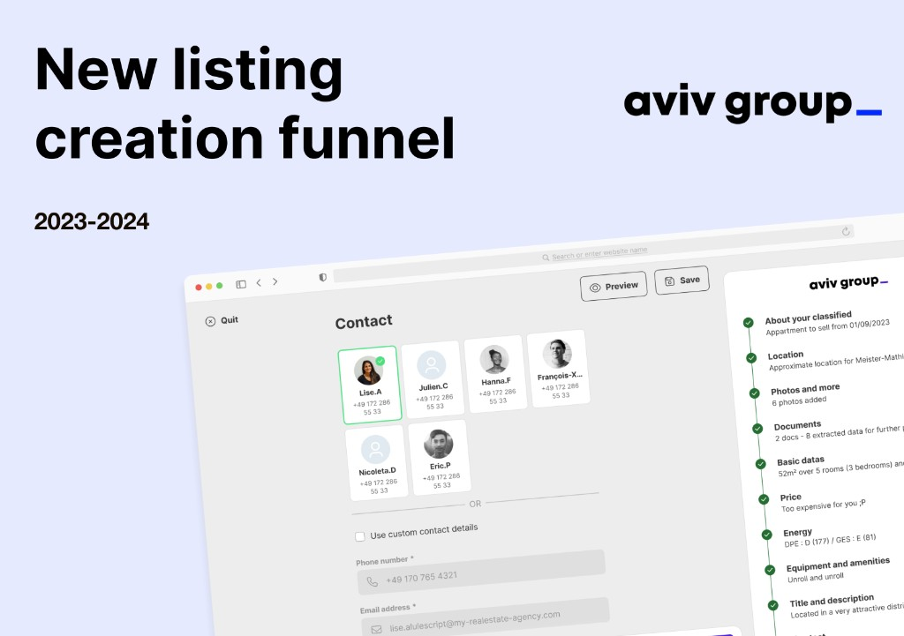
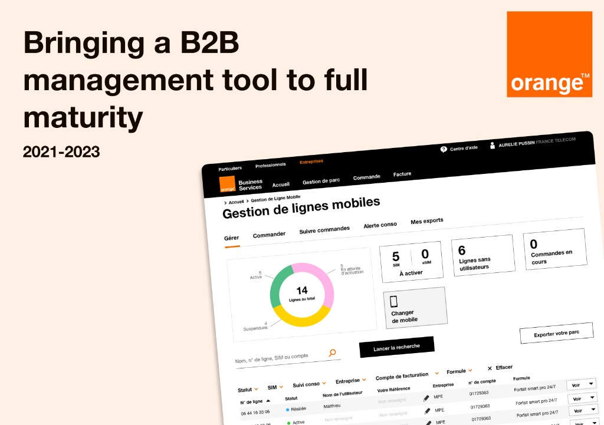
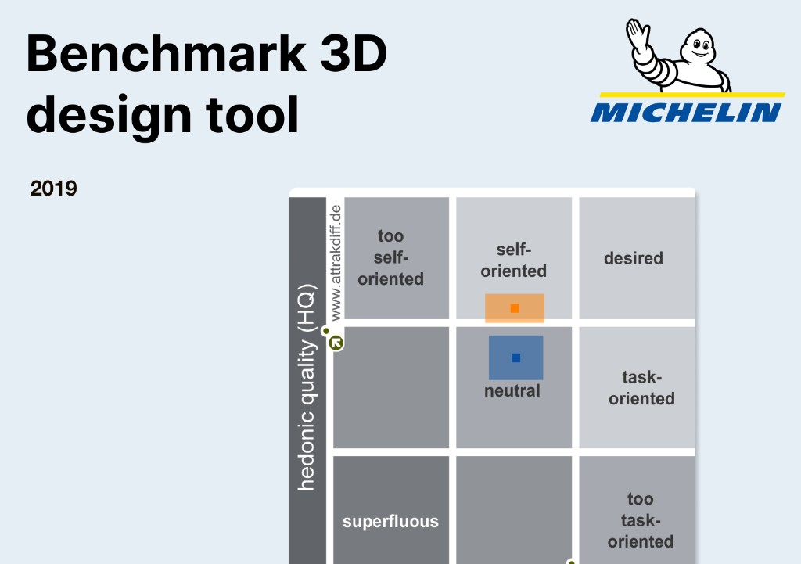
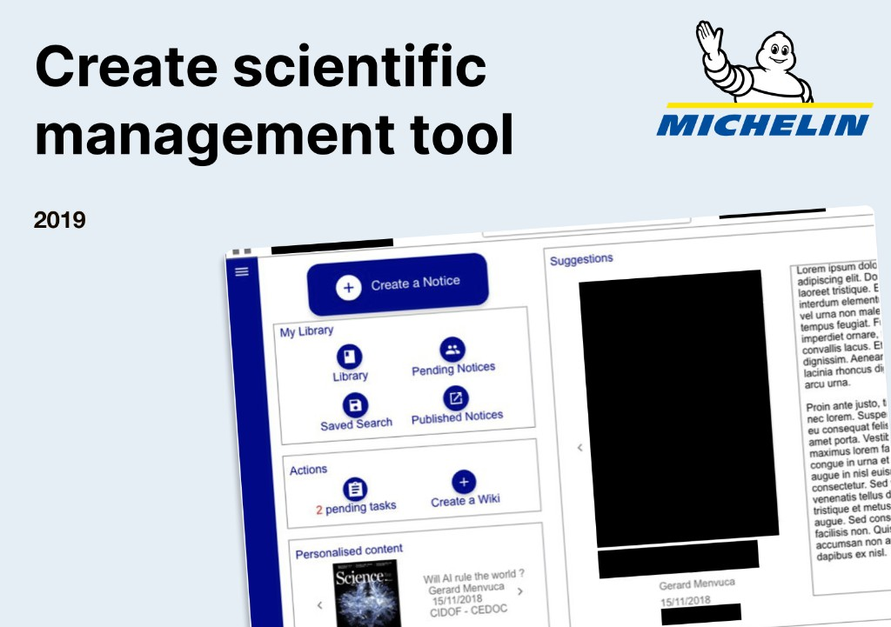
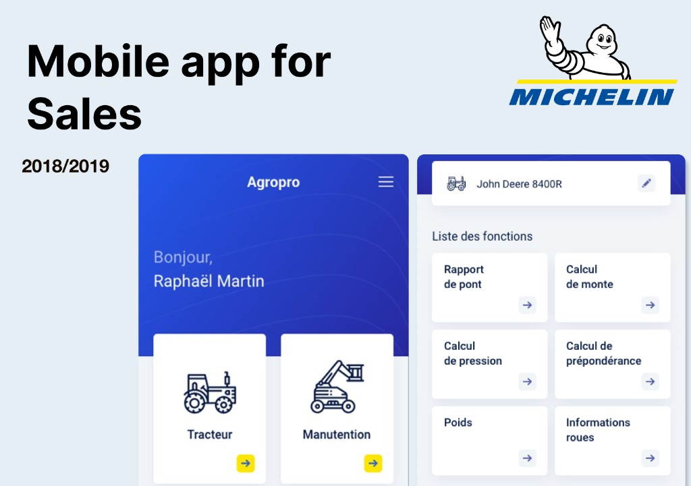

8+ years of design
I built a White Label version of a property listing funnel for a major real estate portal, adding state-of-the-art features while contributing to the company design system.

01Updated and ran discovery on the best next features to implement for international travel planning, then created a mobile-first version for critical use cases.

02Worked with engineers and 3D design teams to benchmark their product so users have the best possible experience in their day-to-day activities.

03Created a new version of a scientific articles management library for Michelin R&D teams, replacing an outdated and insecure legacy product.

04Created a brand-new mobile app for sales people, replacing a legacy Excel-like website that had critical usability and security issues.

05